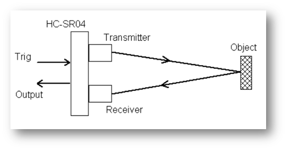
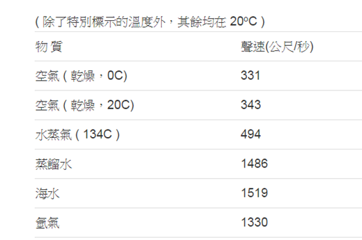

超音波（Ultrasound、超音波）是指任何聲波或振動，其頻率超過人類耳朵可以聽到的最高閾值20kHz（千赫）。超音波由於其高頻特性而被廣泛應用於眾多領域，比如金屬探傷，工件清洗等。

某些動物，如狗隻、海豚、以及蝙蝠等等都有著超乎人類的耳朵，也因此可以聽到超音波。亦有人利用這個特性製成能產生超音波來呼喚狗隻的犬笛。
所謂超音波，只透過具有彈性與慣性介質，如空氣，當空氣本身一旦產生膨脹或壓縮時，透過其分子的運動而有波動的傳撥產生。因此，音波無法在真空中進行傳播。
